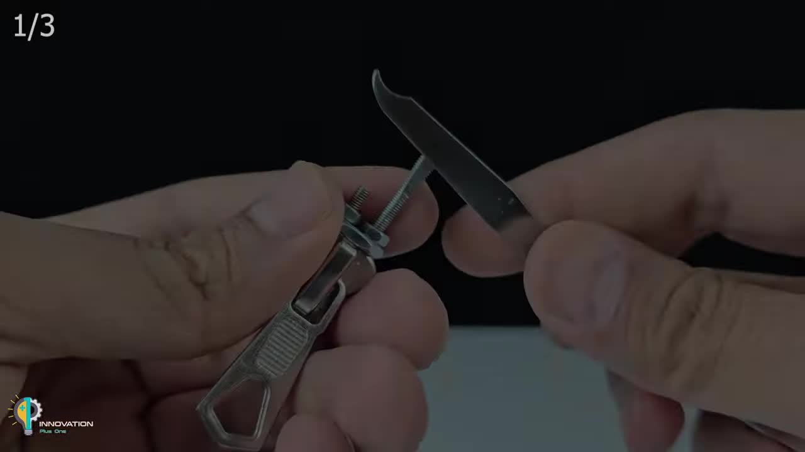

如何用日常物品制作紧急开锁工具
HOW TO CRAFT EMERGENCY LOCK-PICKING TOOLS FROM EVERYDAY ITEMS.
1 易于获取
EASILY ACCESSIBLE MATERIALS
2 巧妙设计
INGENIOUS DESIGN PRINCIPLES
3 应急方案
EMERGENCY SOLUTIONS
方法一: 万能拉链头开锁器
METHOD ONE: THE UNIVERSAL ZIPPER SLIDER LOCK PICK
这款工具巧妙利用拉链头的结构，通过组装螺丝和别针，打造出集开锁器和张力扳手于一体的多功能应急工具。它坚固耐用，且易于操作。
所需材料:
- 一个拉链头 (A zipper slider)
- 两个长度不同的螺丝 (Two screws of different lengths, one thin, one thick)
- 多个螺母 (Multiple nuts)
- 钳子 (Pliers)
- 锤子 (Hammer)
- 指甲刀 (Nail clipper)
- 砂纸 (Sandpaper)
- 一个别针 (A safety pin)
制作步骤:
步骤 1: 准备拉链头
STEP 1: PREPARE THE ZIPPER SLIDER
找到一个尺寸合适的金属拉链头，确保其内部结构完好。
步骤 2: 安装螺丝
STEP 2: INSTALL SCREWS
将较细的螺丝从拉链头顶部的小孔插入，再将较粗的螺丝从底部的大孔插入，使两者在拉链头内部相遇。
步骤 3: 固定螺母
STEP 3: SECURE NUTS
在较粗螺丝伸出拉链头的一端拧上至少两个螺母。使用钳子拧紧螺母，将螺丝牢固地固定在拉链头内，形成一个坚固的工具手柄。
步骤 4: 打磨螺丝头
STEP 4: GRIND THE SCREW TIP
将较粗螺丝的尖端放在坚硬表面，用锤子将其敲平，形成一个扁平的螺丝刀状尖端。
步骤 5: 精修尖端
STEP 5: REFINE THE TIP
使用指甲刀上的指甲锉或砂纸，细致打磨螺丝的扁平尖端，使其光滑且具有一定的锋利度，便于操作锁芯。
步骤 6: 制作张力扳手
STEP 6: CRAFT THE TENSION WRENCH
展开别针，将其穿过拉链头原有的拉环孔洞。用钳子将别针弯曲成一个“L”形或“Z”形的张力扳手，使其能对锁芯施加恰当的转动压力。
步骤 7: 最终调整
STEP 7: FINAL ADJUSTMENT
确保所有部件都紧密无松动，张力扳手和开锁尖端都处于最佳使用状态。
使用方法:
将张力扳手插入锁孔底部，施加轻微的转动压力。将螺丝尖端（即开锁器）插入锁孔上部，尝试拨动锁芯内的弹珠，直到听到“咔嗒”声。在弹珠复位前，保持张力扳手的压力，并继续操作下一个弹珠，直至所有弹珠都被拨动到位，锁芯即可转动。
方法二: 电池与回形针简易开锁器
METHOD TWO: SIMPLE LOCK PICK FROM BATTERY & SAFETY PIN
利用电池的体积和重量作为手柄，结合回形针的柔韧性和可塑性，快速制作出一个应急开锁工具。
所需材料:
- 一节AAA电池 (An AAA battery)
- 一个别针 (A safety pin)
- 烙铁和焊锡 (Soldering iron and solder)
- 钳子 (Pliers)
- 砂纸 (Sandpaper)
制作步骤:
步骤 1: 准备电池
STEP 1: PREPARE THE BATTERY

使用刀片小心刮除AAA电池负极（底部）的外部包裹层，露出内部金属部分。
步骤 2: 焊接别针
STEP 2: SOLDER THE SAFETY PIN
将别针一端用烙铁和焊锡牢固地焊接到电池负极暴露的金属部分。确保焊接点稳固。
步骤 3: 塑形别针
STEP 3: SHAPE THE SAFETY PIN
使用钳子将别针的另一端弯曲成开锁器所需的特殊形状。通常需要一个弯曲的尖端，能够伸入锁芯内部拨动弹珠。
步骤 4: 打磨尖端
STEP 4: GRIND THE TIP
用砂纸或细锉刀仔细打磨别针的尖端，使其光滑且精细，避免损坏锁芯。
使用方法:
将另一张力工具（如小L形金属片）插入锁孔底部施加压力。将电池上的别针开锁器插入锁孔，轻轻拨动锁芯内的弹珠。电池的重量和尺寸提供了良好的握持感，有助于稳定操作。
方法三: 剃须刀片紧急开锁钥匙
METHOD THREE: EMERGENCY RAZOR BLADE LOCK KEY
这个方法利用剃须刀片的锯齿边缘和胶水的塑形能力，制作出一把可以模拟钥匙齿形的应急开锁钥匙。适用于部分简单锁具。
所需材料:
- 一片双面剃须刀片 (A double-edged razor blade)
- 一小段绝缘胶带卷筒 (A small section of electrical tape roll, used as a mold)
- 胶水 (Strong glue, like carpenter's glue or epoxy)
- 砂纸 (Sandpaper)
- 钳子 (Pliers)
制作步骤:
步骤 1: 切割刀片
STEP 1: CUT THE RAZOR BLADE
使用钳子小心地将剃须刀片从中间断开，得到两片锯齿状的刀片。
步骤 2: 准备模具
STEP 2: PREPARE THE MOLD
获得一段坚固的圆筒状物体作为模具，如绝缘胶带的纸芯或塑料管，并用绝缘胶带缠绕使其厚度合适。
步骤 3: 填充胶水
STEP 3: FILL WITH GLUE
将强力胶水倒入模具圆筒中。
步骤 4: 插入刀片
STEP 4: INSERT BLADE
将其中一片剃须刀片带锯齿的一端小心地插入胶水填充的模具中，让锯齿部分露出约1-2厘米。
步骤 5: 固化与成形
STEP 5: CURE AND SHAPE
等待胶水完全固化。固化后，用砂纸细致打磨露出的刀片锯齿部分，使其形成与所需钥匙齿形相似的轮廓。
步骤 6: 重复制作 (可选)
STEP 6: REPEAT FOR TENSION TOOL (OPTIONAL)
另一片刀片，可以用螺丝和钳子塑造成一个简易的张力扳手。
使用方法:

将张力扳手插入锁孔施加压力，将自制钥匙（剃须刀片）插入锁孔。轻轻转动并前后移动自制钥匙，利用其锯齿状边缘拨动锁芯内的弹珠。由于刀片较薄，操作时需要格外小心，避免折断。此方法可用于模拟部分简单锁的钥匙。